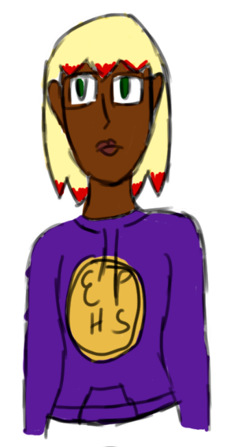

Katrina Marron

Species: Human
Gender: Female (she/her)
Age: 16
Gender: Female (she/her)
Age: 16
A junior at Ryvens High who moved to the town of Ryvensdale two years ago and had adjusted to life as an extra there. After arriving at the Renshaw Hotel, she realized that she must learn to take the spotlight in order to return to her ordinary life.